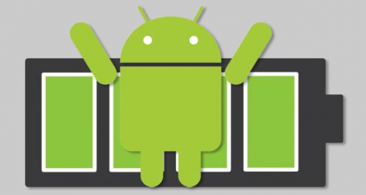

5 приложений для оптимизации работы батареи в Android
Хоте ли бы вы, чтобы ваше Android-устройство работало на одном заряде аккумулятора чуть подольше? Полагаем, что все знают ответ на этот вопрос. Будь то очень энергоёмкое приложение, большой дисплей или наше постоянное желание играть в мобильные игры – аккумулятор всегда разряжается быстрее, чем нам бы того хотелось. Android OS как платформа становится с каждой новой версией все лучше и лучше. Улучшаются также такие элементы платформы, как менеджер задач и процессы многозадачности. Однако иногда более продвинутые технологии являются одновременно и более ресурсоёмкими, в связи с чем можно часто встретить жалобы пользователей на то, что продолжительность работы от аккумулятора не оправдывает их ожиданий. Мы, конечно, могли бы предложить пользователям приобрести флагманское устройство (например Samsung Galaxy S4 или HTC One) с более ёмким аккумулятором, однако не у всех есть желание и возможность купить такой смартфон.
К счастью, Android-разработчики не сидят на месте, а ищут способы максимально продлить жизнь аккумулятора в вашем смартфоне. В начале развития ОС Android появлялось много приложений, основной целью которых было завершение лишних процессов с целью высвобождения памяти. Однако прошло время, и работа платформы стала настолько эффективной, что подобные приложения стали практически неактуальными. Кроме того, некоторые модели устройств сейчас включают встроенные средства, позволяющие выжать из аккумулятора ещё несколько дополнительных минут. К сожалению, не всегда эти средства можно назвать достаточно эффективными. В этом случае на помощь приходят различные сторонние решения. И ниже мы хотим рассказать о нескольких из них, которые отлично зарекомендовали себя на протяжении длительного времени. Сразу хотим предупредить, что в описании приложений мы будем акцентировать внимание только на наиболее интересных особенностях каждого из них, т.е. не нужно думать, что описываемые функции являются исчерпывающими или что аналогичных функций нет ни в одном другом приложении. Итак, если вы готовы, то приступим!
Juice Defender
Напичканное большим количеством функций приложение Juice Defender является, пожалуй, одним из лучших в своём роде. Бесплатная версия Juice Defender позволяет управлять подключениями (Wi-Fi, Bluetooth и др.), а также включает несколько предустановленных режимов (например «сбалансированный» и «агрессивный»), которые можно включать вручную или по расписанию. Juice Defender поможет вам настроить процессы синхронизации и указать, какие приложения могут управлять активностью дисплея.
Помимо бесплатной версии Juice Defender пользователю предлагается и две платные: Plus (2,49$) и Ultimate (6,24$). Каждая из них включает дополнительные возможности и функции. В версии Plus, например, добавлены профили «экстремальный» и «настраиваемый», а также упправление Wi-Fi в зависимости от местоположения и особый ночной режим. Версия Ultimate включает автосинхронизацию, более продвинутое управление GPS и возможность настроить работу устройства в выходные дни и в периоды наибольшей нагрузки. Однако для начала мы советуем вам всё же попробовать бесплатную версию, а если она вам понравится, то тогда можете не скупиться на более функциональный вариант.
Battery Defender
Приложение Battery Defender является не только бесплатным, но и одним из наиболее функциональных. Оно обеспечивает быстрый доступ к управлению соединениями, включая GPS, Wi-Fi, Bluetooth и мобильную передачу данных. И хотя аналогичная возможность есть во многих современных Android-смартфонах, более старым моделям повезло гораздо меньше. Одной из наиболее полезных функций Battery Defender является умная синхронизация приложений. Важно также отметить такие особенности этого приложения, как поддержка русского языка, автоматическая деактивация соединений в ночное время суток и возможность отображать на панели уведомлений уровень заряда аккумулятора в процентах.
Go Power Master Battery Saver
Это приложение, разработанное компанией Go Dev Team, является настолько же великолепным, насколько и гибким. Простое нажатие по дисплею позволит вам быстро изменить режим и переключиться с чтения книги на какую-нибудь онлайн-игру. Если вас не устраивает один из встроенных режимов, вы можете дополнительно настроить два персональных. Go Power Master Battery Saver (GO Battery Saver) внимательно следит за работой ваших приложений, чтобы определить, какое из них потребляет больше всего энергии. Программа поможет найти те функции, которые следует включить или отключить, чтобы увеличить время автономной работы. А нажав кнопку оптимизации, вы, по сути, сделаете всё возможное, что может максимально продлить жизнь аккумулятора. Одно только это нажатие может продлить работу устройства на час или даже больше.
И хотя в бесплатной версии Go Power Master вы найдёте приличное количество настроек, премиум-версия добавит к ним ещё десяток функций. Получить премиум-версию можно прямо внутри бесплатной, заплатив за неё 4.99$. В результате обновления до расширенной версии вы получите такие преимущества, как отсутствие рекламы, возможность создания расписаний, улучшенный контроль над Wi-Fi, Bluetooth и процессором, а также дополнительный режим «экстрим». В то время как бесплатная версия приложения включает в себя два виджета для рабочего стола, которые предоставляют быстрый доступ к настройкам, в платной вы сможете найти ещё три дополнительных виджета. К виджетам можно применять различные темы, а появление уведомлений на панели можно настроить на свой вкус.
Autorun Manager
Из всех перечисленных в этой статье приложений Autorun Manager является, пожалуй, наиболее рискованным. Оно позволяет определить, какие приложения будут запускаться во время загрузки Android-устройства http://uppstore.ru/. В этом приложении вы найдёте два режима: базовый и расширенный. Приложения, выбранные в базовом режиме, будут завершены сразу после загрузки телефона, хотя некоторые из них всё же будут перезапущены. Их мы рекомендуем оставить в покое и позволить системе самой решать, что ей нужно. Что касается расширенного режима, то в нём вы найдете более продвинутые настройки управления виджетами и общесистемными процессами.
Бесплатная версия Autorun Manager поддерживается за счёт встроенной в неё рекламы, но вы можете купить версию Pro без рекламы за 3.74$. Платная версия также избавит вас от перезапуска приложений в базовом режиме и улучшит возможности расширенного. Ещё одним приятным дополнением Pro-версии является режим «Чака Норриса», который позволят завершать процессы в более агрессивной манере. Если вам не по душе столь радикальные функции, то просто пройдите мимо этого приложения, но если вы требуете больше контроля над системными функциями Android, то это то, что вам нужно.
Tasker
Из всех перечисленных приложений Tasker является тем, которое не только позволяет увеличить время автономной работы устройства и завершить ненужные процессы, но позволяет решить и ряд дополнительных задач. В частности, мы рекомендуем его тем, кто любит автоматизировать различные процессы. Если говорить об экономии энергии, то Tasker позволяет настроить ночной режим и автоматическое отключение активных соединений. Tasker способен учитывать день, время суток и место, что может оказаться очень полезным для людей со строго определённым рабочим расписанием. Данное приложение также позволяет настроить телефон для удобного управления звонками, медиа, сообщениями и другими функциями ОС Android. Стоимость Tasker составляет 3,73$ и у вас может уйти время на то, чтобы разобраться со всеми его настройками, но хорошая новость заключается в том, что это приложение по-настоящему является воплощением принципа «настроил и забыл».
А какое приложение для экономии заряда батареи используете вы на своём Android-устройстве? Если вы не пользуетесь подобными приложениями, то может стоит попробовать одно из нашего списка и оценить его возможности? Нам будет очень интересно узнать о вашем опыте работы с приложениями для экономии энергии, потому мы ждём ваших комментариев.